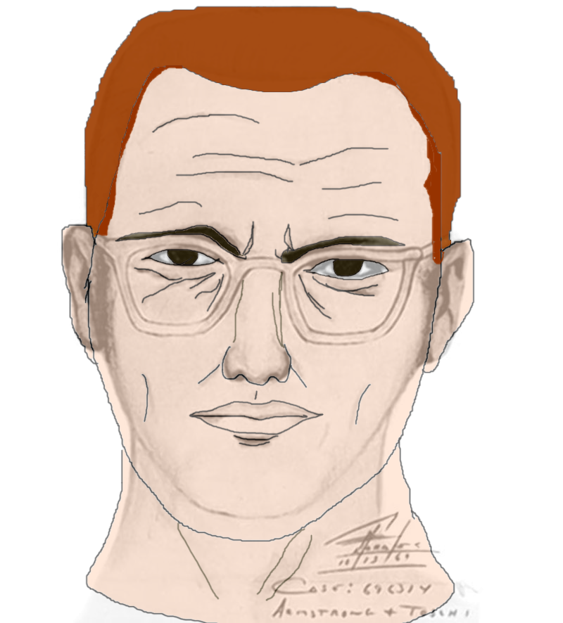

Welcome!
As the world around us continues to evolve, humans naturally become curious about events they are not quite sure about. With the advancements of technology at such a
rapid rate it is possible to make even the most far-fetched events appear to be real. People begin to wonder what is real and what is fabricated. It is through this
curiosity that conspiracy theories are formed. In recent years, the internet has become a large part of this process as people are able to share and discuss events
that they aren't quite sure of. This is why we must always stay vigilant and make sure to gather all the facts before coming to a firm conclusion.

What Is A Conspiracy Theory?
Conspiracy theories are far-fetched hypotheses to give alternate explanations about an event that has occurred. Usually a conspiracy theory is a justification that the
event was preplanned or a reasoning as to why something almost impossible happened. These theories are seen all over the globe and make people question the reality they
are living in.
Conspiracy Theories:
September 11th Attacks
The September 11th attacks were the biggest terrorist attacks and one of the most deadly strikes ever. With almost 3000 people killed and over $10 billion worth of
infrastructure destroyed, it is safe to say that this event will go down as one of the worst tragedies in world history... Read More

US Moon Landing
The US Moon Landing is one of mankind's most advanced accomplishments. This feat is so vast that some may even question it to be fake. Is it possible that this might
just be a little too advanced for human kind? Perhaps they filmed it in a film studio and advanced software... Read More

The Illuminati
The most infamous secret society! It has appeared on the US dollar bill and throughout history dating all the way back to 1776! So what exactly is the Illuminati? Is it a
group of the most powerful people? Are they aliens who secretly control the world's economy? Read More

Area 51
Area 51 has been the theme of all sorts of weird and crazy events, such as the 2019 Facebook "They can't stop all of us" Area 51 raid. Area 51 is the name of a highly
classified military base where aliens are supposedly being kept. Is it possible that all the internet memes are right and there really are aliens being kept there?
Read More

DB Cooper
One of the FBI's most intriguing unsolved cases ever, D. B. Cooper hijacked and escaped an airplane with more than $200,000! It is like something out of a movie.
Since there was never any hard evidence of what actually occurred after he escaped many people have their own theories.. Read More
JFK Assasination
John Fitzgerald Kennedy, also known as JFK was the 35th president of the United States in the early 60s. While riding in a motorcade in Dallas Kennedy was supposedly
shot by Lee Harvey Oswald but did history get the right guy? Read More
The Zodiac Killer
The Zodiac Killer remains to this day one of the greatest unsolved murder mysteries ever. Was the murderer really slick enough to avoid police capture? Could it be
possible that there was no connection between any of the murders and the Zodiac Killer is not just one person? Read More

Hitler's Death
Hitler is one of the most hated individuals in history. He was the leader of the Nazi party that took over Europe and started WW2. According to history, he committed
suicide on April 30th in 1945, but is that really what happened? Could he still be alive somewhere? What happened to this evil man? Read More

Government Cover Up
When taking into consideration all of the most wild conspiracy theories we must account for some that may have been placed there on purpose. Perhaps the government
implemented them into society so that when a conspiracy theory comes along that is actually true, it might just fly over everyone's head... Read More

In light of this holiday season, I challenge you to find the secret message encrypted in this Caesar Cipher:
Mfuud Mtqnifdx
Shift = 5
If you are unsure about how to solve it, hover over the image to the right: